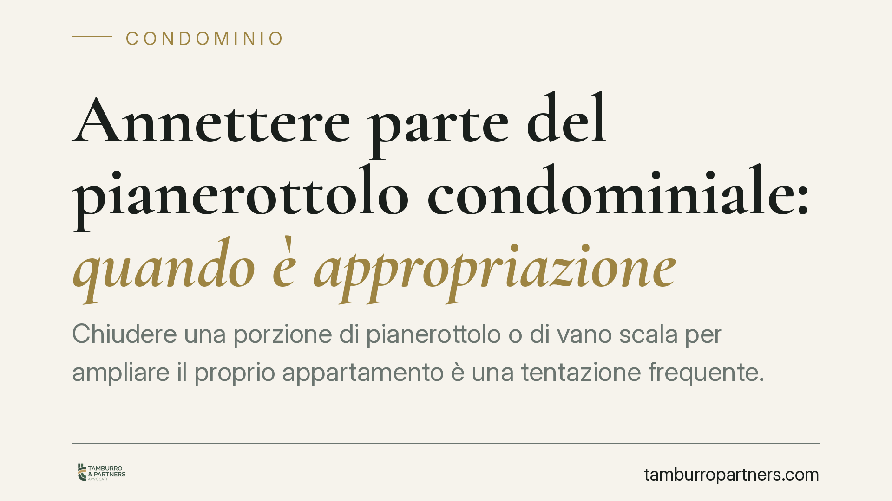

Annettere parte del pianerottolo condominiale: quando è appropriazione
Chiudere una porzione di pianerottolo o di vano scala per ampliare il proprio appartamento è una tentazione frequente. Ma il confine tra uso legittimo del bene comune e appropriazione è netto: incorporare stabilmente un'area condominiale non è un uso più intenso ai sensi dell'art. 1102 c.c. Serve il consenso scritto di tutti i condòmini. Ecco cosa dice la legge e come tutelarsi.

Il caso: uso del bene comune o appropriazione?
Il pianerottolo, come le scale e gli androni, è di norma parte comune dell'edificio ai sensi dell'art. 1117 c.c. Ogni condòmino può servirsene, ma entro limiti precisi.
La domanda ricorrente è se il singolo possa "chiudere" o inglobare una porzione di questo spazio nella propria unità immobiliare, ad esempio arretrando la porta d'ingresso o installando un tramezzo che sottrae metri all'area comune.
Inquadramento normativo
L'art. 1102 c.c. consente a ciascun partecipante di servirsi della cosa comune, a due condizioni: non alterarne la destinazione e non impedire agli altri condòmini di farne parimenti uso. È il principio del cosiddetto "uso più intenso".
La giurisprudenza di legittimità distingue con chiarezza due situazioni. L'uso più intenso è il godimento più ampio di un bene che resta comune e a disposizione di tutti. L'appropriazione, invece, è la sottrazione stabile ed esclusiva di una porzione del bene, che viene di fatto incorporata nella sfera privata del singolo. Solo la prima rientra nell'art. 1102 c.c.
Inglobare parte del pianerottolo nel proprio appartamento appartiene alla seconda categoria: non è uso più intenso, ma vera e propria acquisizione di uno spazio comune, con esclusione degli altri partecipanti. Per questa ragione è illegittima se non autorizzata.
Perché non basta la delibera assembleare
Un punto spesso frainteso. L'assemblea può disciplinare l'uso delle parti comuni, ma non può disporne la cessione o l'attribuzione esclusiva a un condòmino con una semplice delibera a maggioranza.
L'incorporazione di una porzione di bene comune in un'unità privata comporta una modifica della titolarità: si tratta, in sostanza, di trasferire una quota di comproprietà. Per questo occorre un atto negoziale scritto sottoscritto da tutti i condòmini, con i requisiti di forma previsti per gli atti relativi a beni immobili. La delibera assembleare, anche unanime nel voto ma non tradotta in atto formale, non è sufficiente.
Le tutele a disposizione del condominio
Chi subisce la sottrazione di uno spazio comune dispone di rimedi specifici.
La tutela possessoria interviene quando l'annessione integra uno spoglio o una turbativa del possesso. L'azione di reintegrazione per spoglio, prevista dall'art. 1168 c.c., va esercitata entro un anno dallo spoglio (o dalla sua scoperta, se clandestino). Distinta è l'azione di manutenzione dell'art. 1170 c.c., anch'essa soggetta al termine annuale, applicabile alle molestie nel possesso pacifico ultrannuale.
Sul piano della proprietà resta esperibile l'azione di rivendicazione o quella di accertamento della comproprietà, non soggette a termini di decadenza.
Attenzione, infine, all'usucapione. Il possesso protratto di una porzione di bene comune può, in astratto, condurre all'acquisto per usucapione ai sensi degli artt. 1158 e seguenti c.c. Ma per il condòmino occorre un requisito rigoroso: l'*interversio possessionis*, cioè la manifestazione inequivoca di voler possedere il bene come esclusivo e non più a titolo di comproprietario. Il semplice uso, anche prolungato, non basta a mutare il titolo del possesso.
Implicazioni pratiche
Per il condòmino tentato dall'annessione, il rischio è concreto: ordine di rimessione in pristino, condanna al risarcimento e vanificazione delle opere realizzate.
Va poi considerato che l'operazione ha ricadute urbanistiche — la variazione di superficie e di destinazione richiede titoli edilizi e comporta aggiornamento catastale — e fiscali, con effetti su rendita e imposte. Un'annessione non regolarizzata resta esposta su più fronti anche a distanza di tempo.
Cosa fare in concreto
- Verificare la titolarità dello spazio consultando i titoli di provenienza, il regolamento condominiale e le tabelle millesimali prima di ogni intervento.
- Non affidarsi alla sola delibera assembleare: per l'incorporazione stabile è necessario un atto scritto sottoscritto da tutti i condòmini.
- Documentare tempestivamente ogni sottrazione di area comune, con rilievi fotografici e datati, per non incorrere nella decadenza annuale delle azioni possessorie.
- Agire entro un anno con l'azione di reintegrazione ex art. 1168 c.c. in caso di spoglio; valutare le azioni petitorie ove i termini possessori siano decorsi.
- Regolarizzare i profili urbanistici e catastali di ogni modifica, anche quando l'annessione risulti consentita da tutti i partecipanti.
---
*Contributo informativo a cura di Tamburro & Partners - Avv. Giuseppe Tamburro. Non costituisce parere legale.*
Ogni condominio ha una storia a sé.
Se gestisci un'amministrazione e vuoi un confronto su una specifica questione condominiale, scrivi allo studio. Ti rispondiamo entro un giorno lavorativo.